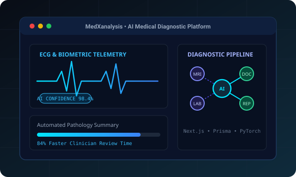
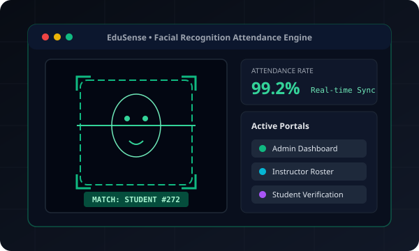
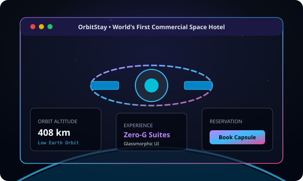
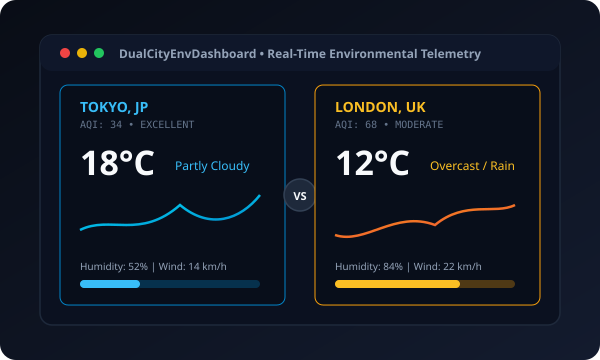
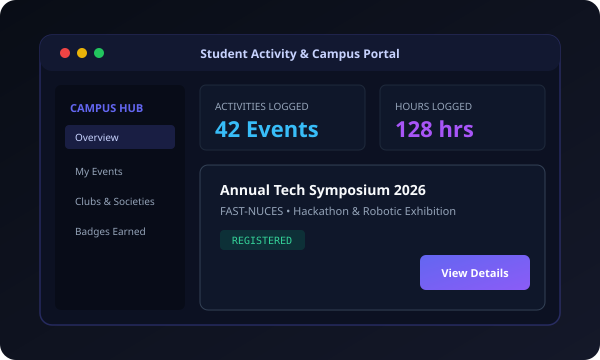
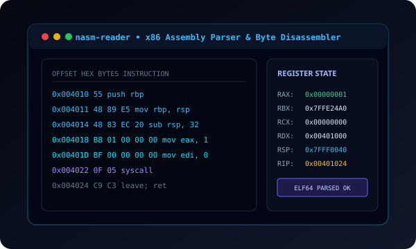

MedXanalysis
Healthcare diagnostic platform with automated AI report summarization, clinician reviews, and secure patient data pipelines.
A disciplined approach to software craft — building reliable multi-tenant architectures, practical computer vision applications, and restrained, high-precision interfaces.
Multi-tenant medical telemetry and diagnostic analysis platform connecting patients, clinicians, and health enterprises, powered by automated AI review pipelines and PostgreSQL.
Role-isolated ingestion gateway routing structured EHR medical records, imaging metadata, and clinician inputs through JWT-secured edge handlers.
High-throughput Python microservices running NLP summarization and computer vision classifiers to generate initial diagnostic hypotheses with confidence scores.
Human-in-the-loop diagnostic ratification ensuring zero hallucinated decisions, persisted directly into ACID-compliant relational schemas via Prisma ORM.

Healthcare diagnostic platform with automated AI report summarization, clinician reviews, and secure patient data pipelines.

Automated facial recognition student attendance management engine with role-based admin, teacher, and student portals.

Editorial luxury interface for the world's first commercial space hotel in Low Earth Orbit with cosmic glassmorphism and precision typography.

Environmental telemetry comparison interface evaluating real-time weather and air quality across two metropolitan areas with local caching.

Academic engagement and extracurricular tracking application managing university events, society memberships, and credential logs.

Low-level x86 assembly instruction parser and disassembly inspector examining ELF binary structures, instruction mnemonics, and register states.
Evaluating system bottlenecks and contrasting legacy procedural workflows against distributed, AI-assisted telemetry pipelines.
Fragmented medical document intake, batch-delayed specialist reviews, and unindexed physical telemetry resulting in high turnaround latency.
Stream-oriented microservice mesh leveraging Python computer vision, Next.js edge handlers, and ACID-verified PostgreSQL audit records.
"We design systems not merely to compute, but to organize complexity with authoritative clarity."
I am Muhammad Uzair Ajmal, an engineer operating across full-stack systems and artificial intelligence. My work investigates the boundary between dependable backends and editorial digital experiences.
From developing medical diagnostic portals with Next.js and Prisma, to training OpenCV computer vision models for automated attendance, every project is anchored in intentional architecture, strict typing, and pure craftsmanship.
@Uzair272 • Engineer at @dameosai
Public repository index maintained continuously on GitHub. Real-time stats synchronized via public API.